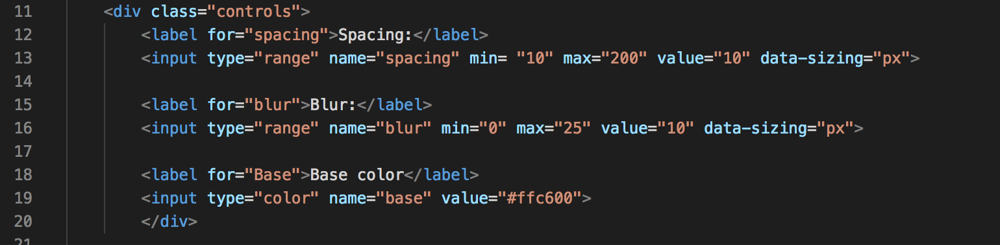
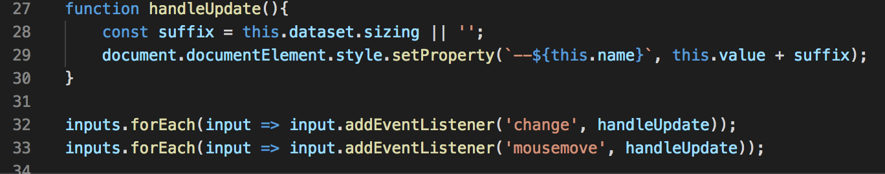

The spacing variable updates where the image is on the page, the blur variable blurs the image and base variable updates the color of the background and the h1. The input tags specify where the user can input data, and in this case are used to define the spacing, blur and base toggles.
The handleUpdate function measures the values of the input and detects when the values have changed.
